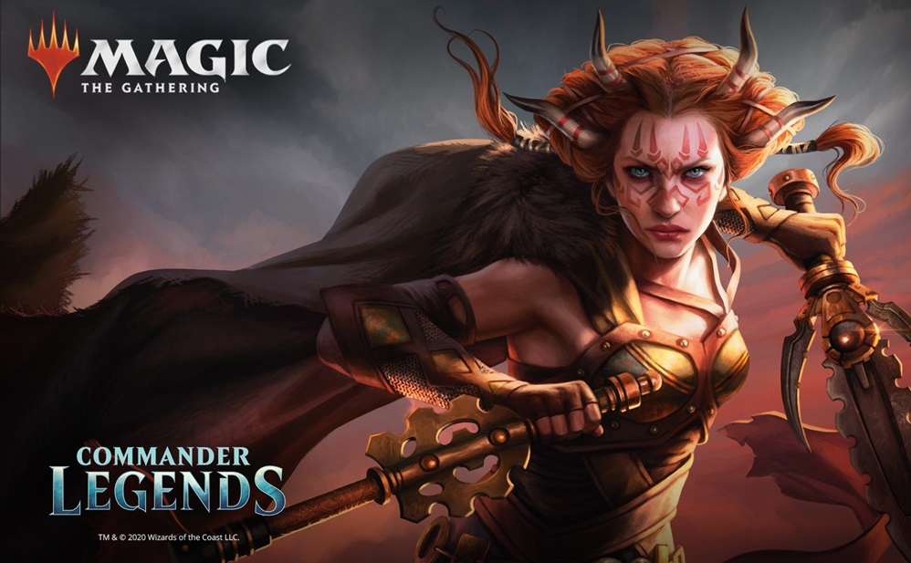
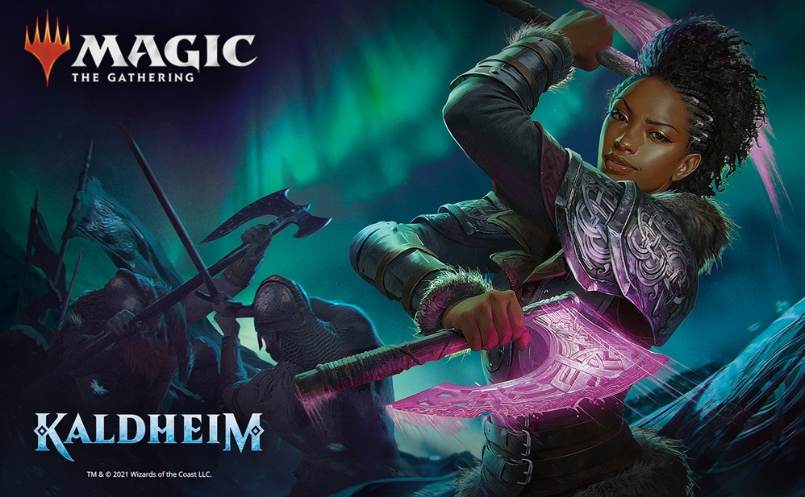

Bem vindo!
Este site é apenas um protótipo para mostrar os decks pré-montados de Commander das últimas coleções lançadas de Magic: The Gathering.
Zendikar é um mundo perigoso de riscos letais, onde bravos aventureiros mergulham em antigas ruínas em busca de recompensas inestimáveis. Há poucos anos a ameaça dos Eldrazi foi eliminada, porém vemos a ruína que eles causaram. Do ponto de vista de seus habitantes, é um lugar hostil que parece estar ativamente tentando matar as criaturas que têm a audácia de viver ali. O perigo é implacável: terreno precário, predadores astutos, desastres naturais em grande escala e o ainda contínuo Turbilhão - as ondulações imprevisíveis de mudança que percorrem a terra - todos representam um desafio constante para a sobrevivência.
Por favor, clique na imagem abaixo para ser encaminhado para verificar os decks dessa coleção para Commander:
Este set apresenta muitos planos e personagens conhecidos, bem como novos. Essas cartas podem ser de qualquer lugar no espaço e no tempo do Multiverso: de Lorwyn a Ixalan, das histórias da Tripulação do Bons Ventos original até os dias atuais.
Por favor, clique na imagem abaixo para ser encaminhado para verificar os decks dessa coleção para Commander:
Este é um mundo de profecias e lendas, mortais e monstros. Um mundo de muitos reinos, sagas épicas, unido por uma verdade. Viking ou Valquíria, Elfo ou Anão, Espíritos ou Demônios todos pertencem à Árvore do Mundo, todos são suplicantes aos deuses. Deuses que viajam entre os reinos para cumprir suas ordens de paz, derramamento de sangue ou para sua própria diversão. Mas e se houvesse uma maneira de aproveitar esse poder? Uma arma com a capacidade de proteger a todos. Uma arma de pura força. Forjado para um deus. Ou...em mãos mais criativas, uma arma de caos inimaginável.
Por favor, clique na imagem abaixo para ser encaminhado para verificar os decks dessa coleção para Commander:
